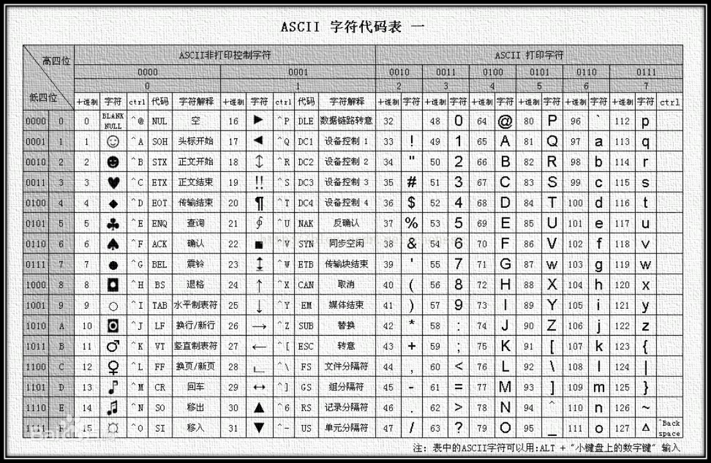
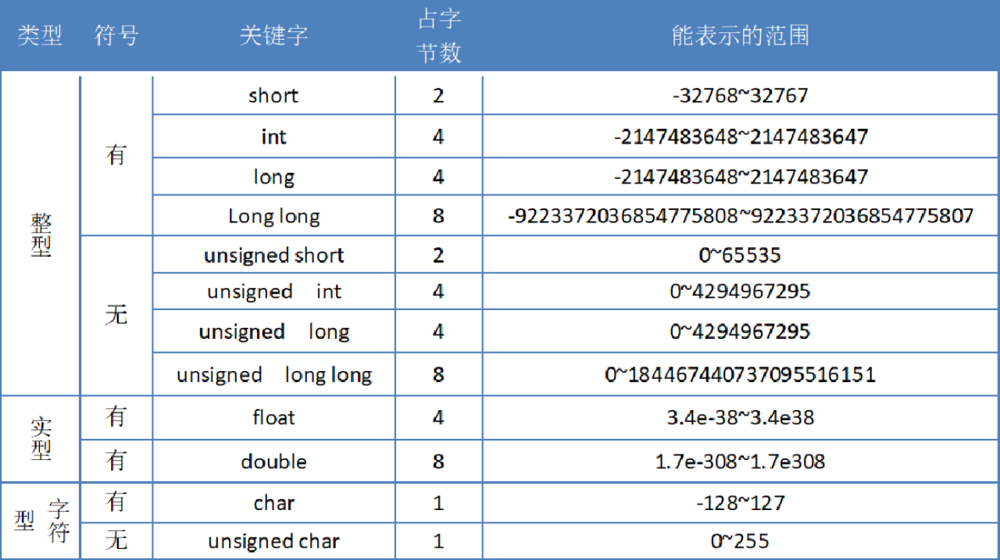
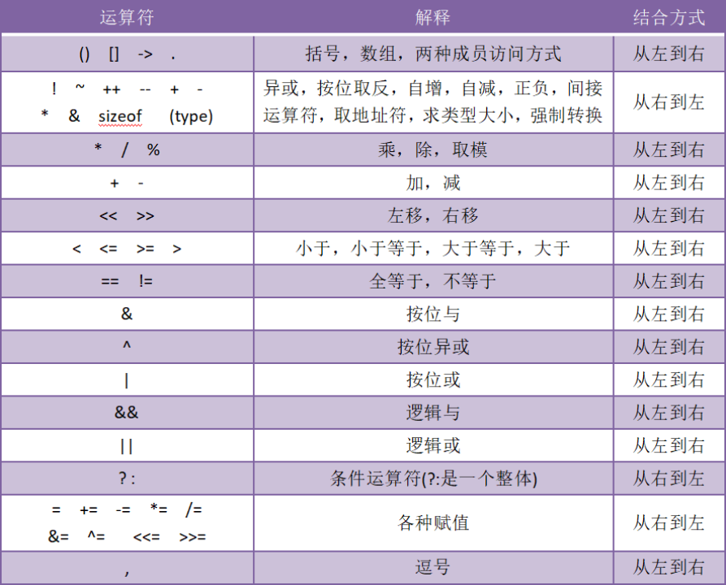

基础内容
进制对照表
| 十进制 | 0 | 1 | 2 | 3 | 4 | 5 | 6 | 7 | 8 | 9 | 10 | 11 | 12 | 13 | 14 | 15 |
|---|---|---|---|---|---|---|---|---|---|---|---|---|---|---|---|---|
| 二进制 | 0000 | 0001 | 0010 | 0011 | 0100 | 0101 | 0110 | 0111 | 1000 | 1001 | 1010 | 1011 | 1100 | 1101 | 1110 | 1111 |
| 八进制 | 0 | 1 | 2 | 3 | 4 | 5 | 6 | 7 | 10 | 11 | 12 | 13 | 14 | 15 | 16 | 17 |
| 十六进制 | 0 | 1 | 2 | 3 | 4 | 5 | 6 | 7 | 8 | 9 | A | B | C | D | E | F |
2的n次方表
| 2^0 | 2^1 | 2^2 | 2^3 | 2^4 | 2^5 | 2^6 | 2^7 | 2^8 | 2^9 | 2^10 |
|---|---|---|---|---|---|---|---|---|---|---|
| 1 | 10 | 100 | 1000 | 10000 | 100000 | 1000000 | 10000000 | 100000000 | 1000000000 | 10000000000 |
| 1 | 2 | 4 | 8 | 16 | 32 | 64 | 128 | 256 | 512 | 1024 |
32个关键字
| 类型 | 关键字 | 解释 |
|---|---|---|
| 基本数据类型 | void | 空类型 |
| char | 字符型 | |
| int | 整型 | |
| float | 单精度浮点型 | |
| double | 双精度浮点型 | |
| 类型修饰关键字 | short | 短整型 |
| long | 长整型 | |
| signed | 有符号 | |
| unsigned | 无符号 | |
| 存储类别关键字 | auto | 自动变量 |
| static | 静态变量 | |
| register | 寄存器变量 | |
| extren | 外部变量 | |
| const | 常量 | |
| volatile | 变量 | |
| 复杂类型关键字 | struct | 结构体 |
| union | 联合(共用体) | |
| enum | 枚举 | |
| typedef | 给类型取别名 | |
| sizeof | 求类型或变量大小 | |
| 跳转语句 | return | 函数返回 |
| continue | 循环继续 | |
| break | 跳出循环或switch | |
| goto | 无条件跳转 | |
| 分支语句 | if | 条件语句 |
| else | 否定分支(与if连用) | |
| switch | 开关语句(多重分支) | |
| case | 分支标记 | |
| default | 开关语句中的其他 | |
| 循环 | for | for循环 |
| do | do…while循环 | |
| while | while循环 | |
| 新增其他 | _Bool | 布尔类型 |
占位符(格式控制符)
| 格式控制符 | 作用 |
|---|---|
| %d | 输出有符号的十进制整数（包括char类型） |
| %u | 输出无符号的十进制整数（包括char类型） |
| %f | 输出float类型的浮点数（输入时小数形式和指数形式都可以识别） |
| %lf | 输出double类型的浮点数（输入时小数形式和指数形式都可以识别） |
| %c | 输出单个字符 |
| %s | 输出字符串 |
| %p | 以整数形式输出指针 |
| %x 或%X | 以十六进制的方式输出 |
| %o | 用来输出无符号的八进制整数 |
| %e | 以指数形式输出浮点数（输入时小数形式和指数形式都可以识别） |
| %g | 自适应输出小数或者指数形式（输入时小数形式和指数形式都可以识别） |
ASCII码表

转义字符
| 转义字符 | 意义 | ASCII****码值（十进制） |
|---|---|---|
| \a | 响铃(BEL) | 007 |
| \b | 退格(BS) ，将当前位置移到前一列 | 008 |
| \f | 换页(FF)，将当前位置移到下页开头 | 012 |
| \n | 换行(LF) ，将当前位置移到下一行开头 | 010 |
| \r | 回车(CR) ，将当前位置移到本行开头 | 013 |
| \t | 水平制表(HT) （跳到下一个TAB位置） | 009 |
| \v | 垂直制表(VT) | 011 |
| \ | 代表一个反斜线字符’’’ | 092 |
| ‘ | 代表一个单引号（撇号）字符 | 039 |
| “ | 代表一个双引号字符 | 034 |
| ? | 代表一个问号 | 063 |
| \0 | 空字符(NUL) | 000 |
| \ddd | 1到3位八进制数所代表的任意字符 | 三位八进制 |
| \xhh | 十六进制所代表的任意字符 | 十六进制 |
基本数据类型

运算符优先级和结合性

文件操作模式
| 模式 | 含义 | 说明 |
|---|---|---|
| r | 只读 | 文件必须存在，否则打开失败 |
| w | 只写 | 若文件存在，则清除原文件内容后写入；否则，新建文件后写入 |
| a | 追加只写 | 若文件存在，则位置指针移到文件末尾，在文件尾部追加写人，故该方式不删除原文件数据；若文件不存在，则打开失败 |
| r+ | 读写 | 文件必须存在。在只读r 的基础上加’+’表示增加可写的功能。下同 |
| w+ | 读写 | 新建一个文件，先向该文件中写人数据，然后可从该文件中读取数据 |
| a+ | 读写 | 在” a”模式的基础上，增加可读功能 |
| rb | 二进制读 | 功能同模式”r”，区别：b表示以二进制模式打开。下同 |
| wb | 二进制写 | 功能同模式“w”。二进制模式 |
| ab | 二进制追加 | 功能同模式”a”。二进制模式 |
| rb+ | 二进制读写 | 功能同模式”r+”。二进制模式 |
| wb+ | 二进制读写 | 功能同模式”w+”。二进制模式 |
| ab+ | 二进制读写 | 功能同模式”a+”。二进制模式 |
本博客所有文章除特别声明外，均采用 CC BY-NC-SA 4.0 许可协议。转载请注明来自 East'blog！